fejléc, lábléc
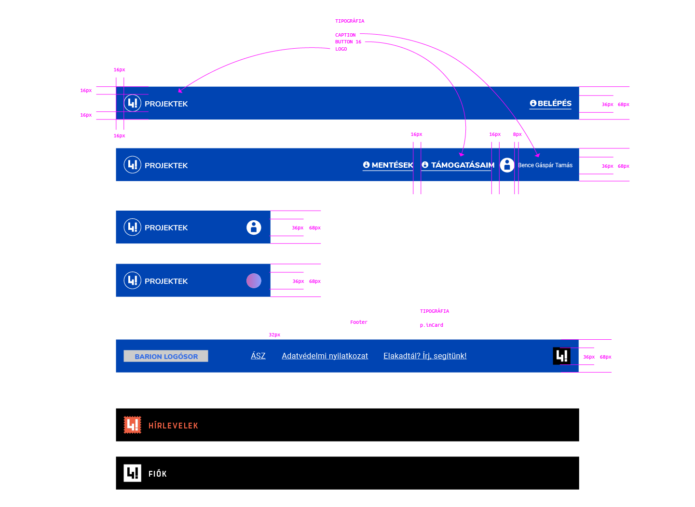
cimlap desktopon
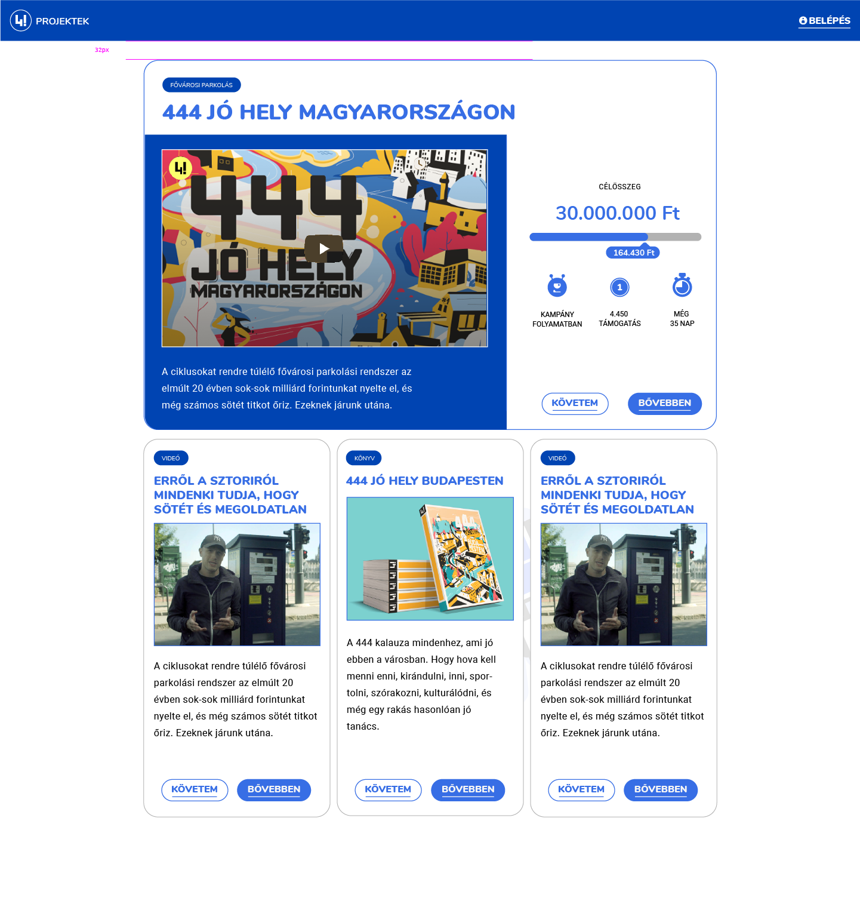
A projekt leírása, kiemelt videóval, aktív kampány esetén Don-O-Vannal, azaz donációs rúddal
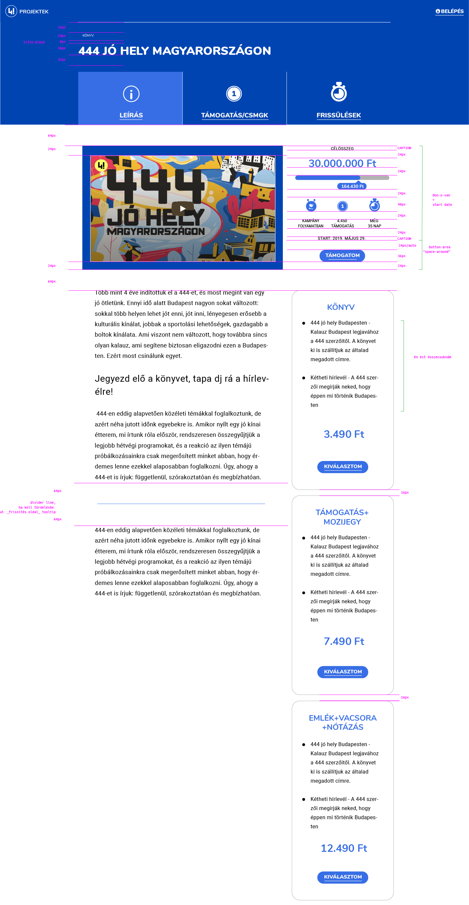
A projekthez tartozó támogatási csomagok listája, kártyák - sorrend: emelkedő
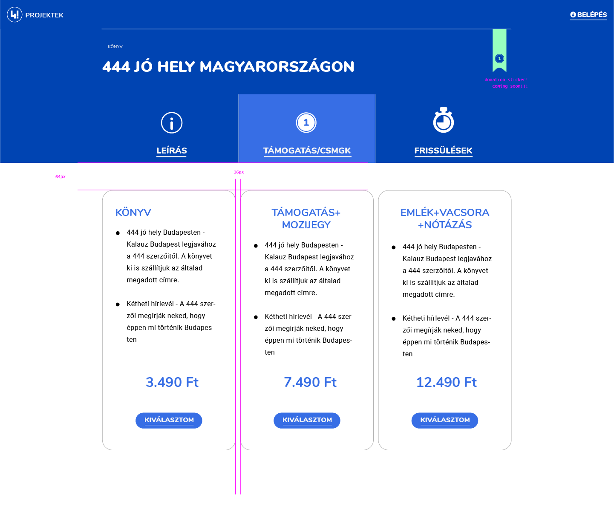
Kiválasztott támogatás, adatok megadása
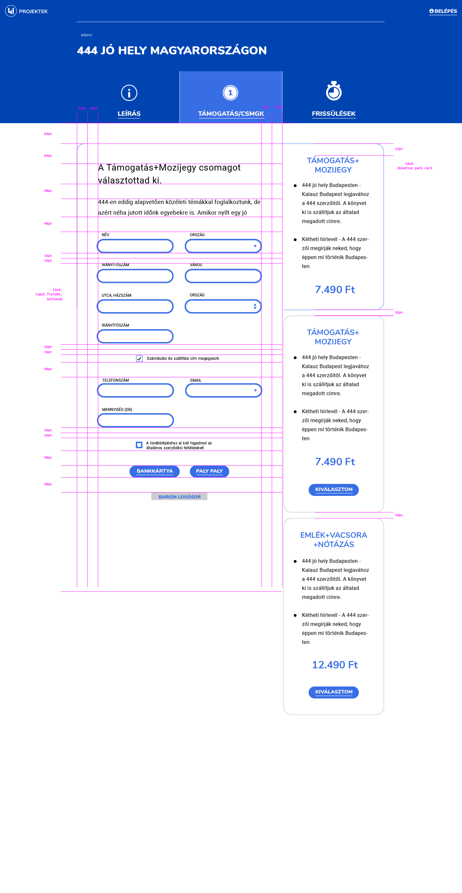
Gépház üzen: 404 / Átirányítás / Tranzakció
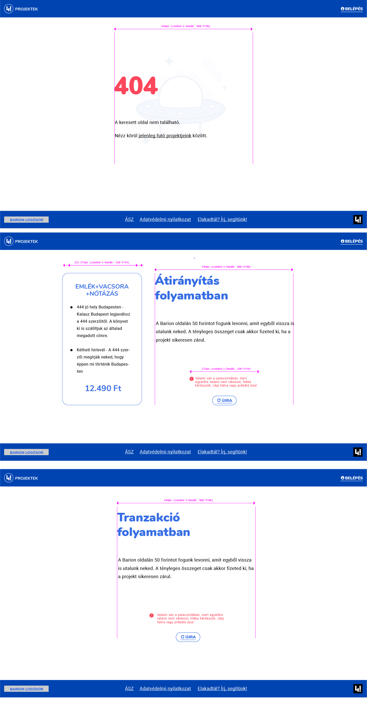
Sikeres tranzi után nagy thanks
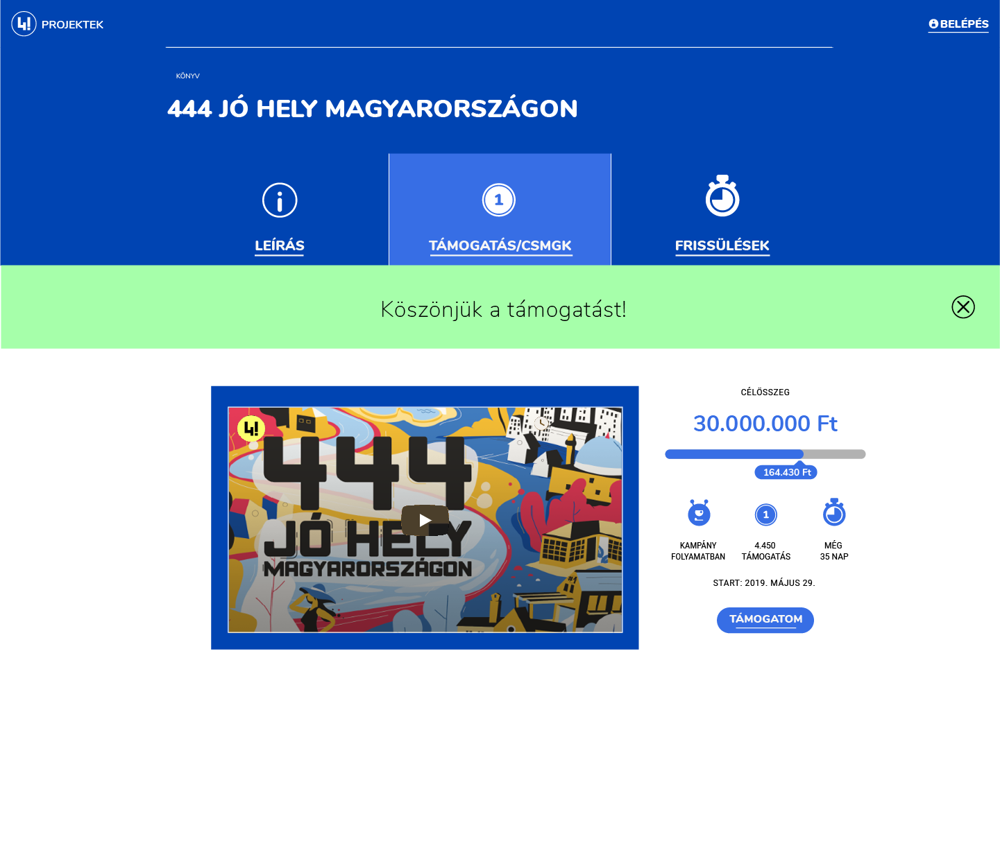
Támogatott projektek oldal, a projektek/kampányok státusza a user támogatása szerint. 4. eset, ha sikeres, de mégse sikerül.
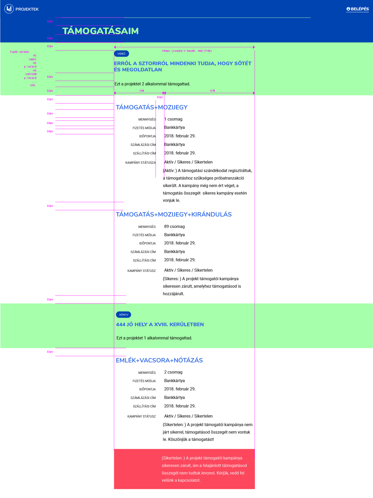
Frissülés: emailek is jöhetnek ide, ha issue a központi kommunikáció
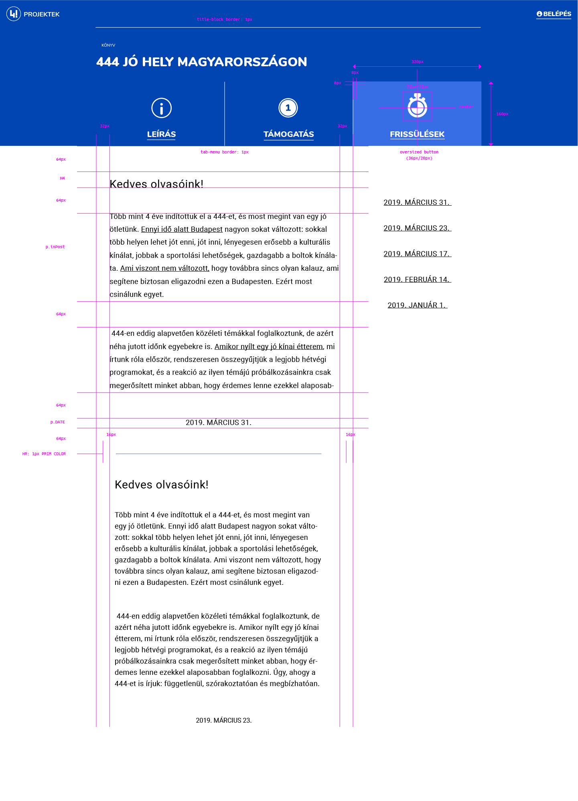
T00LT1P
színekv03 - frissítve: 2019-05-28 21:00
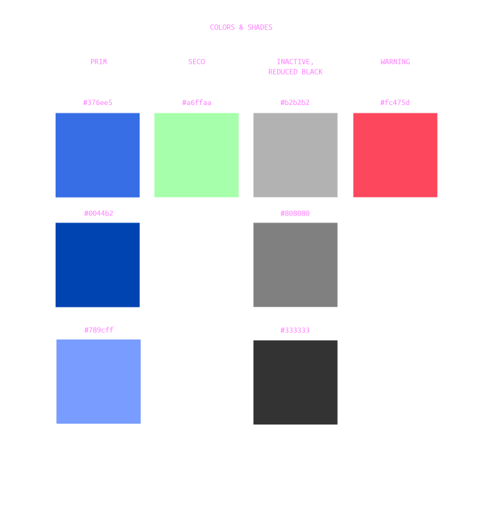
tipográfiav03 - frissítve: 2019-05-28 12:00
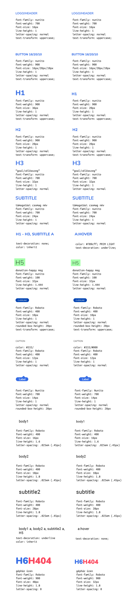
ikonográfia (ZIP)v01 - frissítve: 2019-05-28 17:30
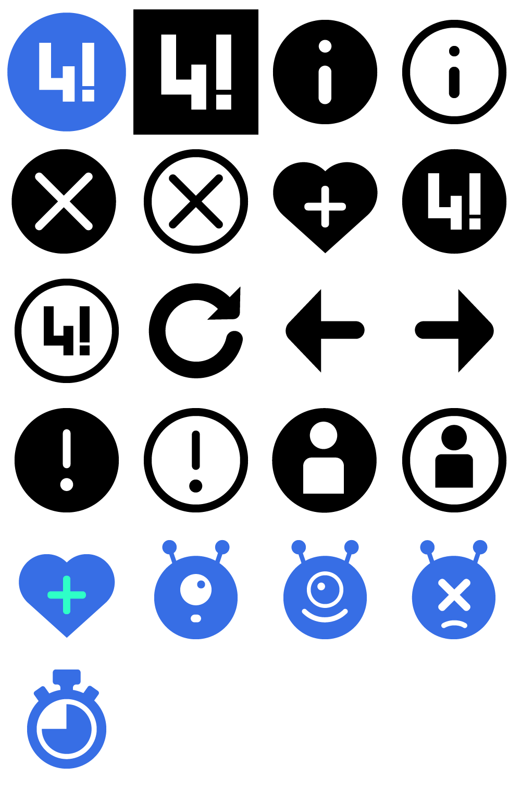
buttons, input fieldsv03 - frissítve: 2019-05-28 21:00
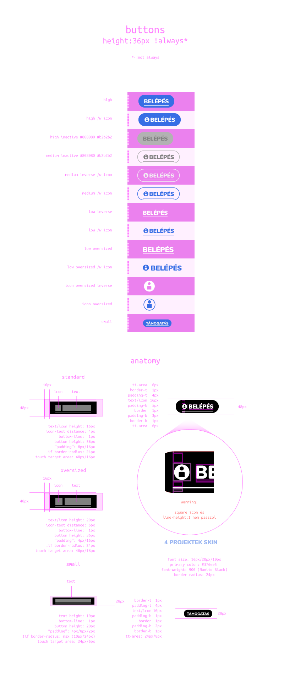
cimlap mobilon
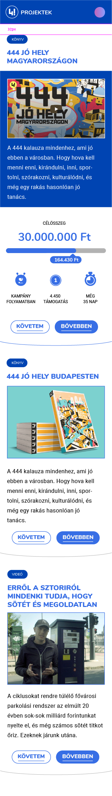
normal kártya, támogatási csomag kártya desktop/mobil; kiemelt/kibontott kártya mobilon
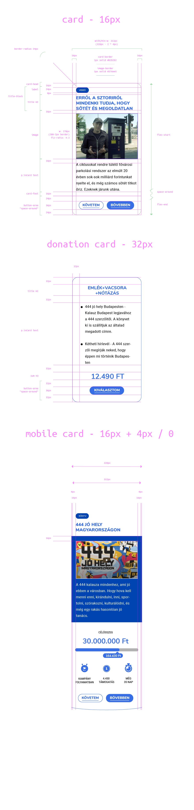
támogatási csomag kártya mobilon
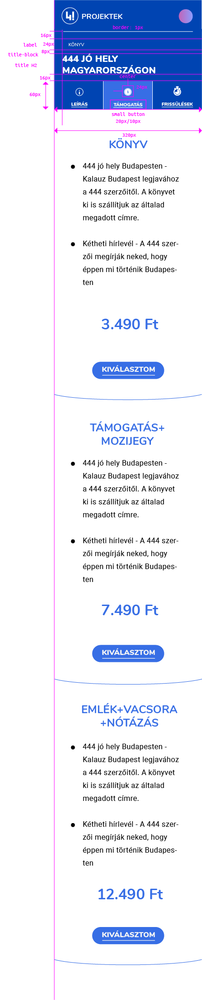
kiemelt/kibontott kártya desktopon
kiemelt/kibontott kártya desktopon
a tabmenü mobilon
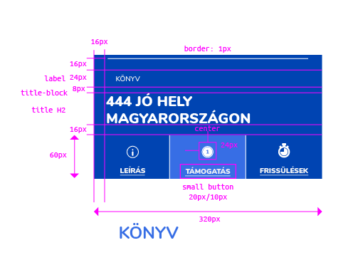